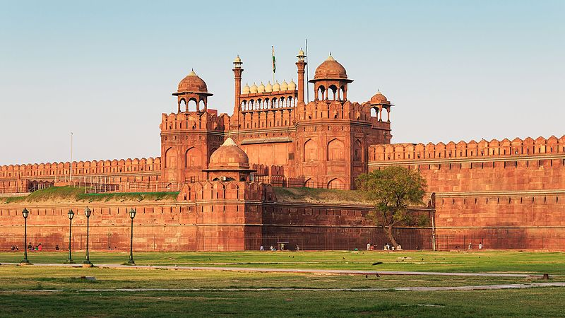

HOME
Red Fort

About
The Red Fort is a historical fort in the city of Delhi in India. It was the main residence of the emperors of the Mughal dynasty for nearly 200 years,
until 1857. It is located in the center of Delhi and houses a number of museums. In addition to accommodating the emperors and their households,
it was the ceremonial and political centre of the Mughal state and the setting for events critically impacting the region.
Red Fort in Delhi was originally built by Raja Anangpal Tomar in 1060 AD who was a Rajput from the Tomara dynasty and whose ancestors had settled in the Aravalli Hills around the end of the first millennium CE.
Some archaeological evidence survives of earlier settlements in the area and may be related to a ruler called Surajpal. Of Anangpal, the primary source for information comes from the Prithviraj Raso, a history of Prithviraj Chauhan which was written much later.
The fort was plundered of its artwork and jewels during Nadir Shah's invasion of the Mughal Empire in 1747. Most of the fort's precious marble structures were subsequently destroyed by the British following the Sepoy Mutiny of 1857.
The forts's defensive walls were largely spared, and the fortress was subsequently used as a garrison. The Red Fort was also the site where the British put the last Mughal Emperor on trial before exiling him to Rangoon in 1858.